Des ennemis
Dans cette partie, on va faire un ennemi, prêt à être utilisé dans le jeu.
Préparation
C'est parti, Scene -> New Scene, on part de Custom Node, on choisit un noeud Area2D et on enregistre sous res://actors/Enemy.tscn.
On renomme le nouveau noeud en Enemy et on commence.
Alors tout d'abord, pourquoi Area2D ?
C'est un node qui permet de gérer les collisions en se basant sur la position des objets, au lieu d'utiliser une simulation physique: c'est plus rapide.
On aura besoin de ça pour détecter la collision avec les balles et le joueur.
On va avoir besoin des nodes suivants en enfant:
- Une image: donc d'un noeud Sprite
- Une forme pour gérer les collisions: CollisionShape2D
- Un système de particules: Particles2D
- Un système d'animation: AnimationPlayer
On va aussi instancier des scènes existantes (depuis les scènes du projet):
- Le système de balles: actors/BulletSystem.tscn
- Une explosion: fx/Explosion.tscn
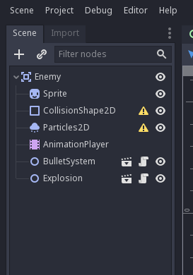
Préparation de l'Area2D
On va commencer par paramétrer le node racine, qui est un Area2D, en appuyant dessus. Dans l'inspecteur, ouvrez la sous-section Area2D -> Collision.
En laissant le curseur sur les premières cases, vous voyez le label attribué à chacune.
Une case correspond à un type d'objet, dans cette ordre là (que j'ai déja défini dans les paramètres du projet):
- Bit 0 (value 1): Player
- Bit 1 (value 2): Rock
- Bit 2 (value 4): Enemy
- Bit 3 (value 8): Bullet
Voici ce qu'il faut faire:
- Pour le champ Layer, ne cocher que la 3e case (correspondant à Enemy)
- Pour le champ Mask, ne cocher que la 1ere et 4e case (Player et Bullet)
Cela permet au système de détection de collisions de ne remonter que les collisions entre Enemy et Bullet, ou Enemy et Player (et non Enemy et Rock).
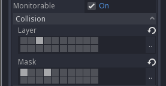
Ensuite, il faut aller dans la section Node en haut à droite, appuyer sur Groups, puis taper Player et appuyer sur Add, et hop, on a ajouté le groupe Enemy sur le noeud racine.
Choix de l'image
On appuie sur le Sprite dans la treeview, on choisit une image dans les assets en bas à droite dans le dossier res://assets/textures/Enemies/, et on fait un glisser-déposer dans le champ Sprite -> Texture de l'inspecteur (on peut aussi appuyer sur le champ et faire Load).
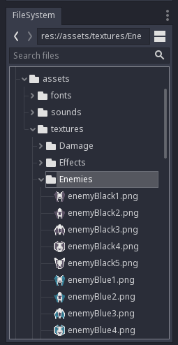
Si besoin, on peut choisir une "teinte" en changeant la couleur dans le champ CanvasItem -> Visibility -> Modulate.
On est bon pour l'image.
Définition du shape de collision
On va maintenant spécifier la surface de contact de l'ennemi. Pour ça, on sélectionne le node CollisionShape2D, et on crée un nouveau CircleShape2D dans le champ CollisionShape2D -> Shape de l'inspecteur.
Il y a deux façons pour définir la taille du shape: avec l'inspecteur en sélectionnant le shape, ou dans la vue centrale en zoomant et en déplaçant le point orange. Le shape apparaît en bleu.
Faites en sorte que le shape recouvre le sprite de l'ennemi.
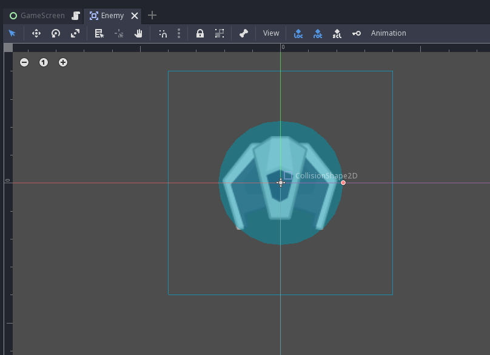
Effet de particules
Je vais aller vite sur les particules, vous pouvez faire ce que vous voulez.
Voici ce que j'ai fait:
Côté Particles2D:
Amount:30Time -> Lifetime:2Time -> Speed Scale:2Drawing -> Local Coords:Off
Côté ParticlesMaterial:
Emission Shape -> Shape:BoxEmission Shape -> Box Extents:(X: 30, Y: 30, Z: 1)Spread -> Spread:180Gravity -> Gravity:(X: 0, Y: 0, Z: 0)Initial Velocity -> Velocity:20Angular Velocity -> Velocity:100Angular Velocity -> Velocity Random:1Scale -> Scale:20Scale -> Scale Random:1Scale -> Scale Curve:New CurveTextureScale -> Scale Curve -> Curve: Déplacer le premier point vers le bas à 0Color -> Color Ramp:New GradientTextureColor -> Color Ramp -> Gradient:New GradientColor -> Color Ramp -> Gradient -> Gradient: Cliquer sur le curseur à gauche, puis sur la couleur dans l'encart à droite, et choisir une couleur violette (ou la couleur que vous souhaitez).Color -> Color Ramp -> Gradient -> Gradient: Cliquer sur le curseur à droite, puis sur la couleur dans l'encart à droite, choisir une couleur noire et déplacer le curseur A (Alpha) à 0.
Côté CanvasItem:
Visibility -> Show Behind Parent:On
Ca devrait donner quelque chose comme ça:
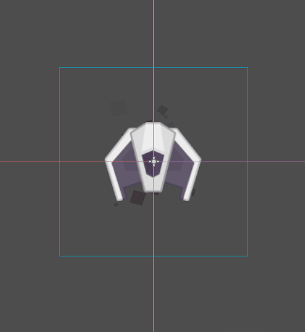
Configuration du BulletSystem
Côté BulletSystem, il faut:
- activer le
Enemy Mode, - définir le
Fire Delayà1, - et déplacer le noeud en dessous le vaisseau dans la vue centrale, pour que les lasers ne sortent pas du milieu du vaisseau.
Animations
On va maintenant jouer avec le système d'animations, lors de l'impact d'un laser sur le vaisseau (hit), et lors de l'explosion (explode).
Il faut également définir une animation où il ne se passe rien au cas où on voudrait réinitialiser certains paramètres (idle).
Il faut sélectionner le node AnimationPlayer dans la tree-view, et regarder le panel du bas, section Animation.
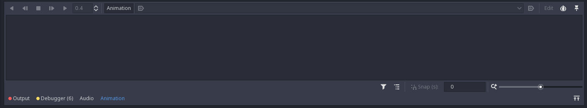
Pour créer une animation, il faut appuyer sur le bouton Animation -> New, puis taper le nom de l'animation. Commencez par créer idle, et définissez la en tant qu'animation par défaut (en autoplay).
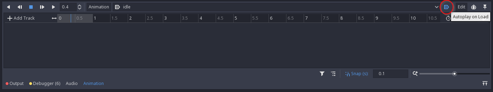
Ensuite, on recrée une animation appelée hit, et on va commencer à animer.
Il faut savoir qu'avec Godot, la plupart des propriétés exposées dans l'inspecteur peuvent être animées. Pour cette animation, on va seulement changer la teinte du sprite de l'ennemi (soit Sprite -> CanvasItem -> Visibility -> Modulate).
Pour ajouter une track à l'animation, pendant que le panel d'animation est ouvert, appuyez sur la clé sur le côté de la propriété à animer. Ici, il faut ajouter Modulate, puis appuyer sur Create lorsque la popup apparaît.
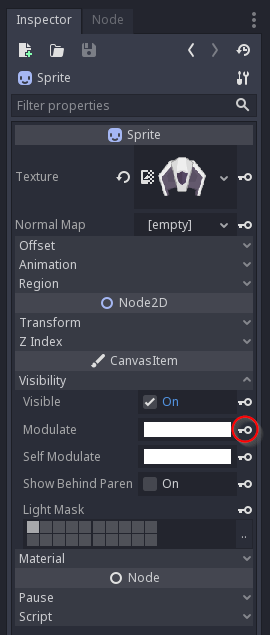
Pour faire un effet de couleur, on met le curseur sur 0.1 seconde, puis on change la couleur de la propriété Modulate pour mettre du rouge vif, et on appuie sur la clé à côté.
Ensuite, on met le curseur sur 0.4 seconde, puis on remet la couleur en blanc, et on appuie sur la clé.
Enfin, on change la durée de l'animation (en dessous du bouton Edit sur la droite du panel Animation) pour mettre 0.4.
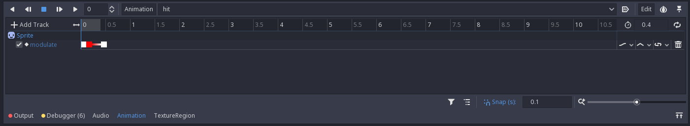
Vous pouvez appuyer sur les boutons Play/Stop du panel d'animation pour avoir un aperçu de l'animation.
On continue en créant une nouvelle animation, appelée explode.
Tout comme pour hit, on va juste animer la propriété Modulate, pour simuler la "disparition" progressive de l'image.
Donc en s'assurant que le curseur est sur la position 0.0, on appuie sur la clé à côté de Modulate avec la couleur blanche, puis on déplace le curseur sur 0.2, on change la valeur de Modulate avec la couleur alpha à 0 pour rendre l'image transparente, et on ré-appuie sur la clé.
Enfin, on change la durée de l'animation à 0.2 seconde.
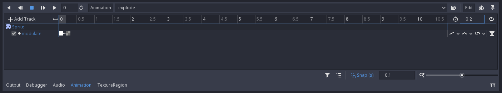
Scripting: début
On va enfin commencer à coder ! (eh oui Coding Dojo).
Sélectionnez le node racine Enemy, et appuyez sur le bouton avec un genre de parchemin dessus.
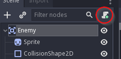
Une popup devrait ensuite s'afficher sur les options de configuration du script, faites juste Create et magie, VSCode se réveille, avec ce contenu:
extends Area2D
# Declare member variables here. Examples:
# var a = 2
# var b = "text"
# Called when the node enters the scene tree for the first time.
func _ready():
pass # Replace with function body.
# Called every frame. 'delta' is the elapsed time since the previous frame.
#func _process(delta):
# pass
Ceci est du GDScript. Prenez le temps de lire les commentaires.
On va enlever tout ce code et remplacer par ça:
extends Area2D
#######
# Enemy
signal exploded
# Max enemy speed
export (Vector2) var max_speed = Vector2(150, 75)
# Max hit points
export (int) var hit_points = 3
# Current velocity
var velocity = Vector2()
# Remaining hit points
var remaining_hit_points = 0
# Current accumulator
var accu = 0
onready var sprite = $Sprite
onready var explosion = $Explosion
onready var bullet_system = $BulletSystem
onready var animation_player = $AnimationPlayer
onready var particles = $Particles2D
onready var collision_shape = $CollisionShape2D
###################
# Lifecycle methods
func _ready():
"""When node is ready in game tree."""
self.connect("area_entered", self, "_on_area_entered")
self.velocity.y = self.max_speed.y
self.remaining_hit_points = self.hit_points
func _process(delta):
"""Process each step."""
self.accu += delta
self.velocity.x = sin(self.accu) * self.max_speed.x
self.bullet_system.firing = true
self.position += self.velocity * delta
if self.accu >= 2 * PI:
self.accu -= 2 * PI
self._wrap_position()
################
# Public methods
func hit():
"""Hit the enemy."""
if self.remaining_hit_points <= 0:
return
self.animation_player.play("hit")
self.remaining_hit_points -= 1
if self.remaining_hit_points <= 0:
self.explode()
func explode():
"""Make it explode."""
# Reset velocity
self.velocity = Vector2()
self.collision_shape.set_deferred("disabled", true)
self.emit_signal("exploded")
self.particles.emitting = false
self.animation_player.play("explode")
self.explosion.play()
yield(get_tree().create_timer(0.5), "timeout")
self.queue_free()
func prepare_for_spawn(spawner, x, y):
"""Prepare for spawn (Spawner method)."""
self.position.x = x
self.position.y = y
#################
# Private methods
func _wrap_position():
"""Wrap position on screen."""
var game_size = self.get_viewport().size
var sprite_size = self.sprite.texture.get_size() * self.scale
var x_lower_limit = -sprite_size.x / 2
var x_upper_limit = game_size.x + sprite_size.x / 2
var y_lower_limit = game_size.y + sprite_size.y / 2
if self.position.x < x_lower_limit:
self.position.x = x_upper_limit
elif self.position.x > x_upper_limit:
self.position.x = x_lower_limit
if self.position.y > y_lower_limit:
self.queue_free()
#################
# Event callbacks
func _on_area_entered(area):
"""When colliding with another area."""
if area.is_in_group("Bullet") and !area.enemy_mode:
area.queue_free()
self.hit()
Oui, ça fait pas mal, et y'a beaucoup de choses à expliquer, mais ce bout de script va donner vie à l'ennemi à l'écran. Avant d'expliquer le script, on va le voir à l'oeuvre.
Intégration des ennemis
Retournez sur le GameScreen.
On va ajouter un node de type Spawner pour faire apparaître des ennemis sur la scène.
Clique droit sur le GameScreen, Instance Child Scene, et ajoutez Spawner. Renommez le EnemySpawner.
Dans l'inspecteur, changez Spawn Delay à 5, et dans la valeur Scene, chargez la scène Enemy qu'on a crée dans cette partie.
On va devoir un peu modifier le script de GameScreen d'abord:
- Sous la ligne
onready var rock_spawner = $RockSpawner: ajouter la ligne:
onready var enemy_spawner = $EnemySpawner
- Dans la fonction
_ready: ajouter la ligne:
self.enemy_spawner.connect("spawn", self, "_on_enemy_spawn")
- Sous la fonction
_on_rock_spawn: ajouter la fonction:
func _on_enemy_spawn(spawner, element):
element.connect("exploded", self, "_on_enemy_exploded")
element.bullet_system.connect("fire", self, "_on_fire")
- Puis sous
_on_rock_exploded: ajouter la fonction:
func _on_enemy_exploded():
self._add_score(500)
Faites Play Scene, et normalement, les ennemis devrait apparaître comme par magie toutes les 5 secondes et vous tirer dessus.
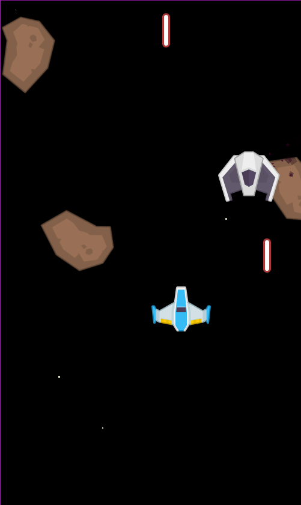
Scripting: le retour
On va maintenant rentrer dans le détail du script.
extends Area2D
#######
# Enemy
signal exploded
# Max enemy speed
export (Vector2) var max_speed = Vector2(150, 75)
# Max hit points
export (int) var hit_points = 3
# Current velocity
var velocity = Vector2()
# Remaining hit points
var remaining_hit_points = 0
# Current accumulator
var accu = 0
onready var sprite = $Sprite
onready var explosion = $Explosion
onready var bullet_system = $BulletSystem
onready var animation_player = $AnimationPlayer
onready var particles = $Particles2D
onready var collision_shape = $CollisionShape2D
...
Sur cette première partie de script, on voit:
- Un signal
exploded, émit quand l'ennemi explose, - Des variables exportés: celles-ci apparaissent dans l'inspecteur:
max_speed: La vitesse max d'un ennemi, c'est un Vector2, un objet avec une coordonnée X et Y,hit_points: Le nombre de tirs qu'un ennemi peut recevoir avant d'exploser, un entier.
- Des variables non-exportées: celles-ci n'apparaissent pas dans l'inspecteur:
velocity: La vélocité actuelle de l'ennemi, Vector2,remaining_hit_points: Nombre de tirs restants, entier,accu: Variable utilisée pour le mouvement des ennemis, entier.
- Des références vers des enfants du node courant: via la fonction
$, on peut récupérer un noeud depuis le noeud courant en tapant son chemin, ici seulement son nom.onreadyveut dire que la variable sera automatiquement chargée lorsque le noeud sera intégré dans le game tree.sprite: Le sprite de l'ennemi,explosion: Une explosion,bullet_system: Le système qui s'occupe de la gestion des tirs,animation_player: Le système d'animation,particles: Le système de particules,collision_shape: Le shape de collision de l'ennemi.
Suivant,
...
###################
# Lifecycle methods
func _ready():
"""When node is ready in game tree."""
self.connect("area_entered", self, "_on_area_entered")
self.velocity.y = self.max_speed.y
self.remaining_hit_points = self.hit_points
func _process(delta):
"""Process each step."""
self.accu += delta
self.velocity.x = sin(self.accu) * self.max_speed.x
self.bullet_system.firing = true
self.position += self.velocity * delta
if self.accu >= 2 * PI:
self.accu -= 2 * PI
self._wrap_position()
...
Ces deux fonctions sont des méthodes dites de lifecycle, du cycle de vie de la scène:
_ready: Appelée lorsque le noeud est intégré dans le game tree, c'est ici qu'on fait les initialisations.- Ici, on connecte le signal
area_enteredexposé par le noeud courant (Area2D) sur une fonction appeléeon_area_entered, - On définit la vélocité Y courante avec la valeur max,
- Et on définit les points de vie restants avec la valeur de base.
- Ici, on connecte le signal
_process: Appelée à chaque step de l'exécution de la scène. Dans une exécution à 60 FPS, elle est exécutée toutes les 16 ms. C'est ici qu'on fait les mises à jour des éléments de la scène. La variabledeltacontient le délai qui s'est écoulé depuis la dernière update.- Ici, on augmente la valeur de l'accumulateur,
- On change la vélocité X suivant une sinusoïde pour donner un effet sympa,
- On active le système de tir,
- On définit la position de l'ennemi depuis sa vélocité,
- On "boucle" la valeur de l'accumulateur pour éviter de partir dans l'infini,
- On "wrap" la position de l'ennemi sur l'écran (fonction définie plus loin).
Vous vous demandez peut être à quoi sert ce delta et pourquoi _update est appelée aussi souvent.
Je vais pas rentrer trop dans le détail, des articles entiers ont été réalisés sur la gestion du "time step" dans le jeu vidéo, mais il faut savoir qu'il est nécessaire de "découper" l'exécution de cette façon pour que tout puisse se mettre à jour et s'afficher en même temps.
Suivant,
################
# Public methods
func hit():
"""Hit the enemy."""
if self.remaining_hit_points <= 0:
return
self.animation_player.play("hit")
self.remaining_hit_points -= 1
if self.remaining_hit_points <= 0:
self.explode()
func explode():
"""Make it explode."""
# Reset velocity
self.velocity = Vector2()
self.collision_shape.set_deferred("disabled", true)
self.emit_signal("exploded")
self.particles.emitting = false
self.animation_player.play("explode")
self.explosion.play()
yield(get_tree().create_timer(0.5), "timeout")
self.queue_free()
func prepare_for_spawn(spawner, x, y):
"""Prepare for spawn (Spawner method)."""
self.position.x = x
self.position.y = y
...
Ici, on définit 3 fonctions:
hit: S'assure d'enlever un point de vie à l'ennemi:- D'abord, on quitte la fonction si on a plus de points (explode devrait déja avoir été appelé),
- On exécute l'animation
hit, - On enlève un point,
- S'il n'y a plus de point: on appelle
explode.
explode: Fait exploser l'ennemi:- D'abord, on reset la vélocité (ça évite de faire glisser l'ennemi n'importe où pendant qu'il explose),
- On désactive le shape de collision (ça évite de bloquer les tirs du joueur pendant l'explosion),
- On émet le signal
exploded, - On désactive le système de particules,
- On exécute l'animation
explode, - On lance l'explosion,
- On attend 0.5 secondes (explication ci-dessous),
- Et enfin on programme la suppression du noeud.
prepare_for_spawn: Méthode nécessaire qui sera appelée depuisSpawner:- On définit juste la position depuis les valeurs envoyées depuis le spawner.
Petite explication sur le yield de explode: si à la place on avait fait quelque chose comme sleep 0.5, on aurait bloqué toute l'exécution du jeu. Hors ici on veut juste attendre avant d'appeler la méthode queue_free pour supprimer le node.
Ici, on crée un timer de 0.5 secondes à la volée via get_tree().create_timer(0.5), et on attend le déclenchement du signal timeout, en redonnant la main au jeu (on met la fonction en "pause").
Quand le signal a été émis, la fonction explode reprend la main, et on exécute bien queue_free, et ce sans bloquer le jeu.
C'est le fonctionnement même des fameuses coroutines, qu'on peut trouver dans la plupart des langages, comme en Python par exemple.
Suivant,
...
#################
# Private methods
func _wrap_position():
"""Wrap position on screen."""
var game_size = self.get_viewport().size
var sprite_size = self.sprite.texture.get_size() * self.scale
var x_lower_limit = -sprite_size.x / 2
var x_upper_limit = game_size.x + sprite_size.x / 2
var y_lower_limit = game_size.y + sprite_size.y / 2
if self.position.x < x_lower_limit:
self.position.x = x_upper_limit
elif self.position.x > x_upper_limit:
self.position.x = x_lower_limit
if self.position.y > y_lower_limit:
self.queue_free()
#################
# Event callbacks
func _on_area_entered(area):
"""When colliding with another area."""
if area.is_in_group("Bullet") and !area.enemy_mode:
area.queue_free()
self.hit()
C'est la fin du script, on définit ici deux méthodes:
_wrap_position: Appelée dans le code de_update, permet de s'assurer que l'ennemi reste sur l'écran, et lorsqu'il traverse les bordures de l'écran lors de son déplacement, permet de le téléporter de l'autre coté:- On récupère la taille du jeu et du sprite,
- On définit les limites min/max à atteindre,
- Si on dépasse d'un côté on va de l'autre,
- Si on dépasse du bas de l'écran, on détruit le node.
_on_area_entered: On l'a branchée dans la méthode_ready, permet de réagir aux collisions avec le noeud courant. Le paramètreareacontient le noeud cible avec lequel l'ennemi a eu une collision.- Ici, on regarde si le noeud cible est dans le groupe
Bulletet qu'il n'est pas en mode "ennemi". - Si c'est le cas, c'est que c'est un tir du joueur, donc on supprime la balle (via
queue_free, et on appellehitsur l'ennemi)
- Ici, on regarde si le noeud cible est dans le groupe
Voilà, vous avez toutes les explications sur l'ennemi, ça fait beaucoup mais c'est pas vraiment compliqué finalement, et ça permet de faire pas mal de choses.